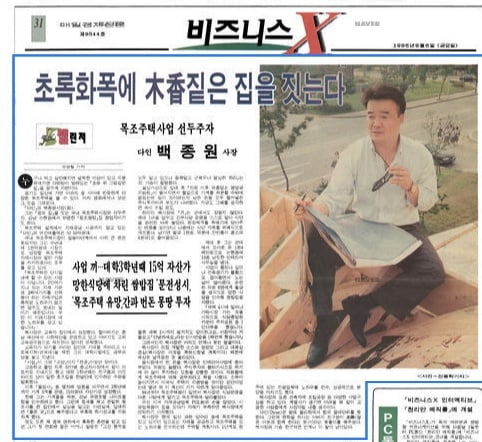
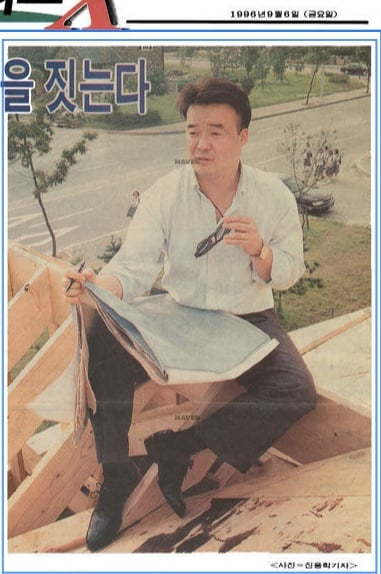
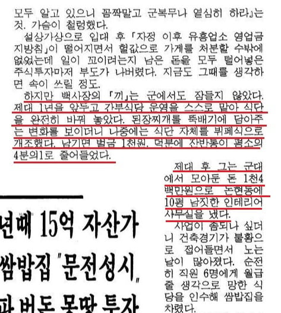

장교로서 간부식당 운영을 맡아
된장찌개를 뚝배기에 담아주고
식단 자체를 뷔페식으로 개조하고
음식 남기면 벌금 1천원 도입
기사에 나옴 ㄷㄷㄷ



장교로서 간부식당 운영을 맡아
된장찌개를 뚝배기에 담아주고
식단 자체를 뷔페식으로 개조하고
음식 남기면 벌금 1천원 도입
기사에 나옴 ㄷㄷㄷ
사업수단이 드러나면 당연히 입막음 해야지ㅋㅋㅋ
그시절 급양병들 한명도 안나오는거 보면
급양장교 했다는건 사실일까 싶다
대표님 축지법 쓰신다
저때 군인월급이...
아무리 간부여도 저당시 천사백을 어떻게 모았지?
나무위키 보니까 백종원이 89년도에 소위로 임관해서 93년도에 중위로 전역했다고 나오던데
89년도 소위 월급이 26만원, 93년도 중위 월급이 49만원이니까 가능할듯?
집에서 용돈도 받았다 치면 쌉가능이고
그걸 왜 자기 주머니로?
포병장교가 식당관리로 재배치받았다?
무슨 뜻인지 알제?
보통 폐급이면 근접화력 유도반에 넣는다는 말이 있던데. 거기도 아니고 아예 병과 부사관이 다 하는 취사장이면...
근대 급양관이 중요한자리라서 마냥 폐급넣지는 않음 병사야 그냥 재료손질 설거지민 시켜된다지만 급양관은 식탁을 책임지는 자리리서. 잘못되서 사고치면 ㅈ되는 자리
그시절 부대에서 봤을 사람들 아무도 안나타나는거 보면
급영관 썰도 지어낸게 아닐지
가발 보소
같은부대 출신들 등판바람
저때 천원이면 지금 5천원쯤 되려나
밥값의 거의 1/3이 벌금이네?
96년도 최저시급 1275원임 ㅋㅋㅋㅋ 거의 한시간 시급 벌금으로 받는꼴...
사람이 아니었네
저러니까 잔반이 줄지 ㅋㅋㅋ 대충 지금으로 치면 뷔페 남기면 만원! 이런느낌인데..
근데 시대상적으로도 잔반 남길만한 시대는 아니었던 듯
군대에서 쫄쫄 굶던 시절에 구타 가혹행위 만연했던 시절인데
생각해보니 그렇네. 맛잇어봐야 초코파이 시절이네

뷔페식에서 남기는거 괘씸하긴해
맛있으면 안 남겨
자신은 먹뱉하면서
내가 이렇게 대단한 사람이다
목조주택사업?
군대썰을 누가믿어ㅋ
빽 신화에는 증인들이 없음
건축으로 성공했으면 오만 공법 자기가 다 만들었다 했을건데
당연히 철근도 빼먹고
자기입으로 지잘났다는놈들 치고 ㅋㅋㅋㅋ
근데 1000원 벌금 제도 도입했다 쳐도 그게 왜 개인 돈으로 들어감?
벌금이 백종원 주머니로 들어간다는 말이 있음?
아 벌금 1000원 이랑 1400만원 모아서 나왔다는 말 같은 기사에 있어서 그거 모아서 나왔다는 줄
담배피는건줄 알았네
뉴스 기사라고 다 믿을 수 없고
그렇게나 신화들을 남겼다면서
왜 여태 증인이 나타나는 댓글들을 한번도 본 적도 없는 것도 그렇고
허풍 과장 각색 창조 이런게 얼마나 섞여 있는지 모르겠고
사람들도 다 걸러서 듣겠지
그간 해왔던 말들을 보면 하는 발언들을 믿을 수 없어
신뢰하지 않는 것은 사람들 각자의 자유지
자기가 풀은 썰을 안 믿는다고 고소하면 개그고
이경규가 자기가 자기 스스로를 추켜세우는 사람 말은 믿지 말라고 했어
보통은 가만히 있어도 다른 사람들이 추켜세워 준다고 하더라고
나는 이경규 말이 맞다고 생각해
그리고 과거에 뭘 했든 이제 듣기 싫어
과거의 어떤 성공 신화가 있든 말든 관심없어
왜 자꾸 스스로 추켜세우며 과거의 성공썰을 푸는지 모르겠어
현재 보여주는 모습을 보고 믿든 말든 할텐데
하는 행보들 보면 요즘 사람들이 느끼는 것은 실망감 뿐이던데
언제까지 과거 성공 썰만 풀지 모르겠어
다들 영웅인줄 알고 많은 사랑과 인기를 줬는데
영웅이 아니었어 영웅이 아니라고 했다고 고소하면 이것도 개그고
비판들이 너무 많이 보이는데 비판들을 앞으로도 계속 고소한다면
얼마나 많은 고소를 해야 될까? 1억건? 10억건? 100억건?
도무지 모르겠는데 최악의 대처라고 봐
삼성 폰 못 만든다고 댓글 달았다고 삼성 법무팀이 고소하던가?
요식업 한다면서 왜 그리 고소했다는 이야기가 많이 보이는지 모르겠네